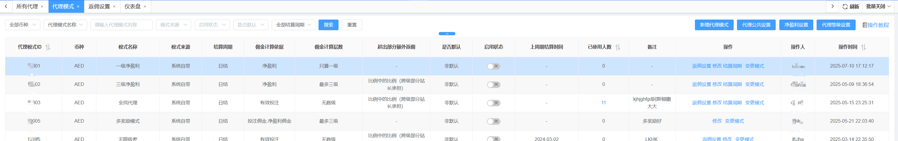
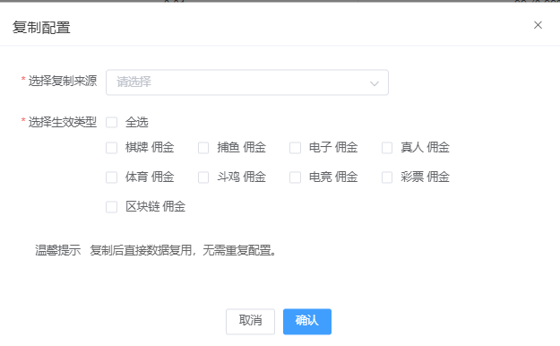
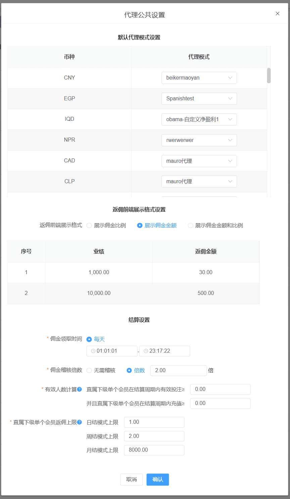
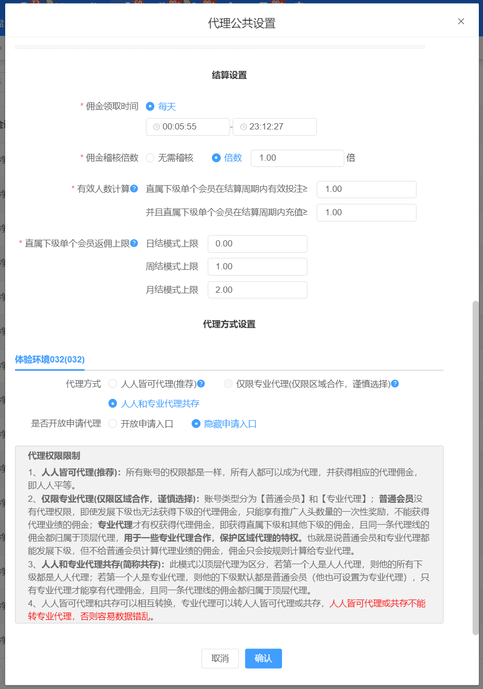
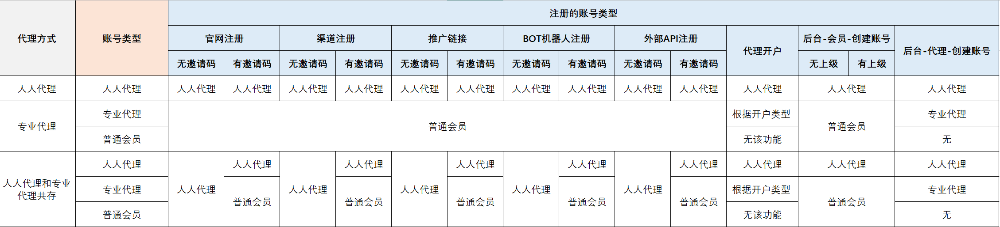
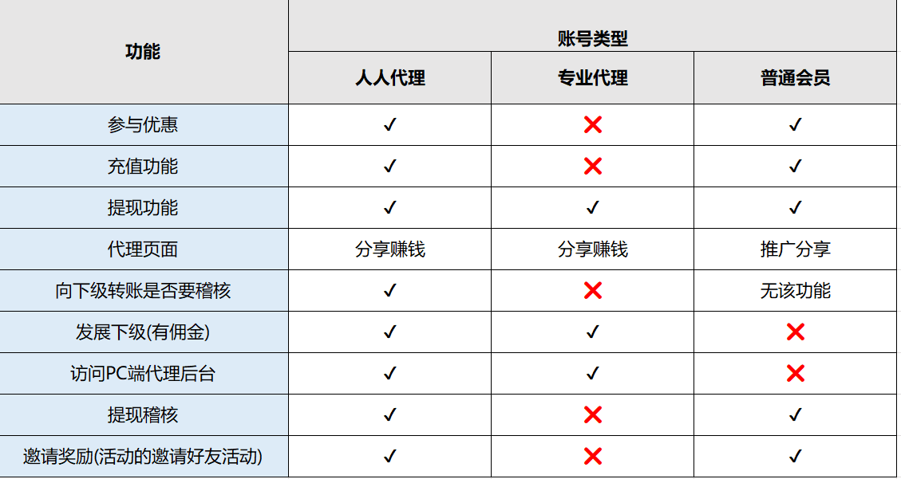
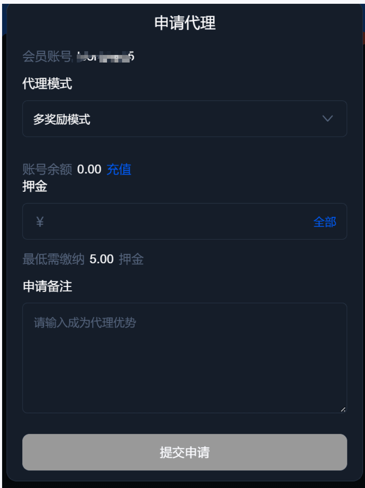
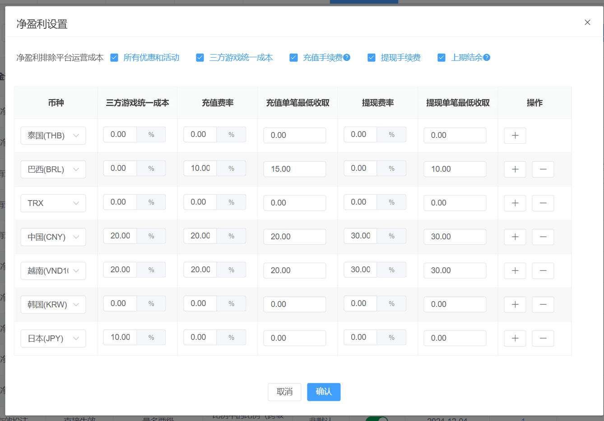
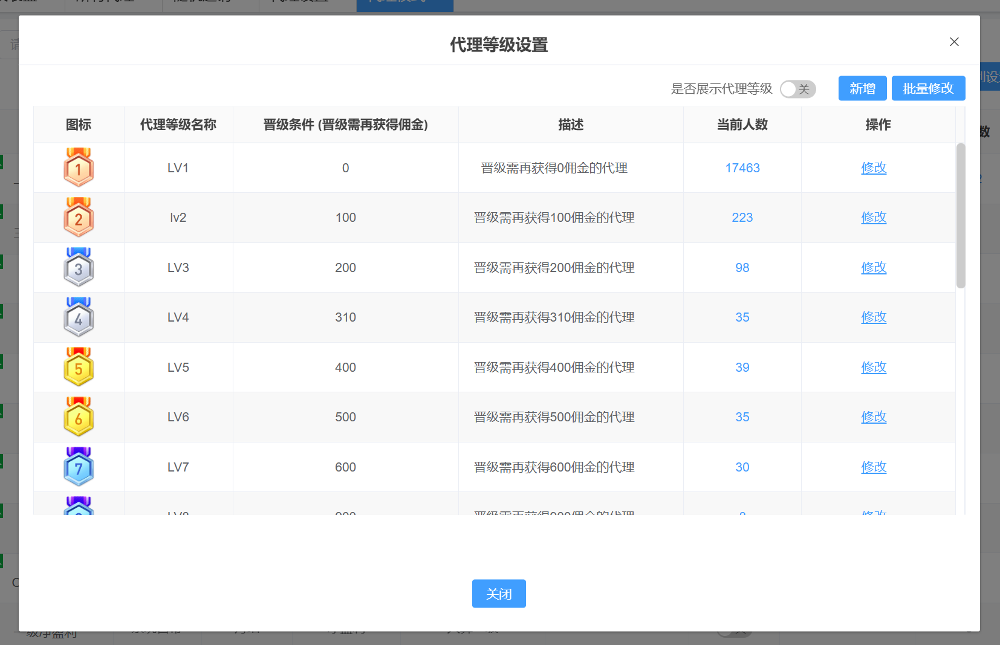

代理模式--代理模式介绍
该模块可对代理模式进行配置，系统自带的代理模式为6种，同时也支持自定义代理模式。
系统自带代理模式有：无限极差、一级代理、三级净盈利、一级净盈利、全民代理和多奖励模式。

1、多奖励模式介绍
概述：多奖励模式为提供更灵活和透明的佣金结构，推出全新多奖励代理模式。该模式佣金由首充、累计充值、有效投注、净盈利和终极大奖五部分组成，确保代理在长期合作中获得稳定的收益和合理的回报。业主可通过后台自由配置佣金条件，满足不同业务需求。此外，首次实现实时返佣机制，根据累计充值和有效投注进行快速结算，结算周期实现日结，确保及时获得收益，助力业务快速增长。
设置：多奖励模式-修改
代理模式名称：多奖励模式，支持修改模式名称；
佣金计算层数：最多三级
业绩计算范围：可配置，默认为全部计算(含无效)
净盈利计算方式：因多奖励模式的佣金包含首充、充值佣金、投注佣金、净盈利佣金，所以会涉及到计算净盈利的公式，所以净盈利的计算方式可以配置，同时净盈利的计算公式也复用在多奖励模式中。
结算周期：日结+实时结算 ，有效投注和充值佣金为每一个小时进行一次结算。
周期结算后是否补佣金差额：因充值和投注都是先按最低等级开始的实时返佣，所以结算周期刚开始时先按最低佣金比例计算，随着业绩积累逐渐提升比例，越到结算末期佣金比例越高。结算周期结束后，您可自行决定是否补差额给代理，补差额的计算公式：周期差额=周期业绩x周期最高返佣比例-周期已领取；默认是不补差额，所以您可以设置更高比例来吸引代理；也可以设置合理比例+补差额。
举例说明：以每日凌晨0点作为结算周期为例，今日累计充值100的一级返佣为1%，充值3000的一级返佣为3%，假设B是A的直属下级，若B于今日凌晨1点充值2000（超过100，享受1%佣金），则A在凌晨1点立即获得佣金2000*1%=20；若B于今日凌晨14点再充值4000（即超过3000，享受3%佣金），则A在今日14点立即获得佣金4000*3%=120。开启补差额情形，则次日凌晨0点，系统将补A的佣金差额为：（2000+4000）*3% -（20+120）=6000*3%-140=40；不补差额情形，则次日凌晨0点将不再补偿A任何差额佣金。
佣金赠送维度：即佣金计算依据， 可进行配置，至少选择一个。
终极大奖：即需要代理的直属会员同时完成要求的条件（首充、净盈利、有效投注和充值这四种条件会根据业主的配置展示到前台。），即可完成终极大奖。 默认为开启状态。
特别说明：以上终极大奖、和返佣的前提条件必须是有效会员，即在结算设置中设置的有效会员的条件。
2、无限极差
无限极差设置：无限极差-修改
佣金计算层数：无数级
佣金计算依据：有效投注
业绩计算范围：可配置，默认为全部计算(含无效)
3、一级代理
一级代理设置：一级代理-修改
佣金计算层数：只算一级
佣金计算依据：有效投注
业绩计算范围：可配置，默认为全部计算(含无效)
4、三级净盈利
三级净盈利设置：三级净盈利-修改
佣金计算层数：最多三级
越级部分额外佣金：比例中的比例(跨级部分站长承担)， 举例说明：A-B-C-D 中，B获得佣金10.，C获得佣金20，则A获得B的直属会员贡献佣金的20.00%，即A获得10*20%=2 这部分是额外部分，由业主来进行承担，同理C的直属会员给A贡献佣金为：20*20%*20%=0.8.
赠送比例：可配置，默认为20.00%
佣金计算依据：净盈利，净盈利的计算公式使用代理模式净盈利设置
计算方式：可配置默认为：所有会员(综合盈利会员)，所有会员即包含盈利的会员。
业绩计算范围：可配置，默认为全部计算(含无效)
5、一级净盈利
一级净盈利设置：一级净盈利-修改
佣金计算层数：只算一级
佣金计算依据：净盈利，净盈利的计算公式使用代理模式净盈利设置
计算方式：可配置默认为：所有会员(综合盈利会员)，所有会员即包含盈利的会员。
业绩计算范围：可配置，默认为全部计算(含无效)
6、全民代理
全民代理设置：全民代理-修改
佣金计算层数：无数级
越级部分额外佣金：比例中的比例(跨级部分站长承担)， 举例说明：A-B-C-D 中，B获得佣金10.，C获得佣金20，则A获得B的直属会员贡献佣金的30%，即A获得10*30%=3 这部分是额外部分，由业主来进行承担，同理C的直属会员给A贡献佣金为：20*30%*30%=1.8.
赠送比例：可配置，默认为30.00%
佣金计算依据：有效投注
计算方式：可配置默认为：所有会员(综合盈利会员)，所有会员即包含盈利的会员。
新增代理模式
币种：当前代理模式的币种，即针对多币种和单一币种会使用不同的规则，具体规则如下：
公共规则：
1、默认的代理模式：即用户在进行注册时，使用的当前的代理模式
2、代理模式为关闭：只要代理模式中存在投注、充值等影响佣金结算的记录，则该代理模式仍然进行结算，直至该代理模式没有充值、投注等记录。
站点只有一个币种（同时适配多品牌站点）：
1、代理模式可以同时开启，但是默认的代理模式只有一个。
2、设置为默认的代理模式，请在代理公共设置中进行设置。
站点有多个币种时：
1、每个币种最多可开启一个代理模式且该代理模式为默认的代理模式；
2、新增币种时，默认的代理模式为全民代理；
3、当进行切换默认代理时，原有的代理模式会自动关掉（适配代理公共设置中切换代理模式）；
4、当停用币种时，当前的代理模式会直接隐藏不展示。
代理模式名称：该模式的名称
代理佣金计算层数：代理的佣金计算的等级层数，无数级（所有层级都会计算佣金）、自定层数（该层数范围内计算佣金）、
启用状态：启用的代理模式可被选择
结算周期：日结（自然日）、周结（自然周）、月结（自然月）、自定义
佣金计算依据：有效投注、净盈利
- 有效投注：即单个会员在结算周期内的有效投注总和
- 净盈利： 净盈利= - 直属会员输赢 - 领取优惠 - 充值手续费 - 提现手续费 - 三方游戏统一成本 + 上期结余，上期结余本身为负数或为0（大于0则为转化为佣金），上期结余为在上个周期内，直属会员输赢的总和。该公式会根据净盈利设置勾选项进行调整
业绩计算范围：全部计算（无效会员的业绩会计算到上级代理的业绩中）、只计算有效会员业绩
计算方式：所有会员（综合盈利会员）、仅计算亏损会员
推广教程：该代理模式的教程
返佣设置（由返佣比例的页面迁移过来）：当前所有的返佣目前按照个为单位（有效投注类型、净盈利类型），不在以万为单位。当有效投注、有效人数、返佣比例为都为0有且只有该条数据时，则对应的返佣比例不在前端进行展示
复制配置：选择来源，勾选生效类型即可 温馨提示：复制后直接数据复用，无需重复配置。

代理公共设置
默认代理模式设置：
默认为全民代理模式。之前有默认的代理模式则不影响。
返佣前端展示格式设置：
返佣前端展示可以可以自己调整 展示佣金数值还是展示佣金比例或佣金金额和比例
结算设置：
佣金领取时间：即代理可以领取佣金的时间区间
佣金稽核倍数：指代理领取佣金之后，进行提现时需要的倍数，默认为1.0倍
有效人数计算：直属下级在结算周期内需要达到有效投注和充值金额，达到了配置的数值则为有效人数，0为不限制
直属下级单个会员返佣上限：根据代理模式的结算周期每个直属下级给上级提供的佣金的最大佣金。
特别提醒：正常结算为结算周期的第二天的凌晨2点开始结算。

代理方式设置：
人人皆可代理和共存可以相互转换，专业代理可以转人人皆可代理或共存，人人皆可代理或共存不能转专业代理。
代理方式为新增的一个功能，该功能为平台使用什么代理方式。目前所有的平台默认为人人代理。
代理方式分成三部分：即人人代理、专业代理、人人和专业代理共存（后续称之为共存）。
人人代理：即用户通过注册、代理直属开户、后台开户创建的账号都是代理的角色即人人代理。
专业代理：即区分了账号类型， 分成专业代理和平台会员的类型。
共存：即在平台中有专业代理、人人代理、普通会员三种角色。

以下为代理模式注册账号来源

人人代理和专业代理功能说明

特别说明：
1、专业代理的代理模式中，所有的佣金都归于顶层代理，所有的下级代理无法获得佣金。适配于所有的代理模式（无限极差、一级代理等等）
2、人人皆可代理与人人和专业代理共存这两种代理方式可以互相转换，专业代理可以转人人皆可代理或人人和专业代理共存，人人皆可代理与人人和专业代理共存不能转专业代理，否则数据容易错乱。专业代理只要转到人人和专业代理共存，则不可以回退。
是否需要缴纳押金： 开启后普通会员申请代理需要根据配置的币种缴纳押金

净盈利设置
净盈利= 直属会员输赢 - 领取优惠 - 充值手续费 - 提现手续费 - 三方游戏统一成本 + 上期结余
特别说明：上期结余为负数或0
上期结余计算公式：当进行勾选时，上期结余=上周期结算时的直属业绩（如果直属业绩为正数，即代理盈利，上次结算会员盈利为0，如果上周期结算时的直属业绩为负数，即代理亏损，则等于该数值）
当不勾选时，上次结算会员盈利=0

代理等级设置
代理等级更新规则：
1、代理等级每天做一次更新；
2、业主修改了代理等级规则之后，会在第二天进行生效；
3、只有代理产生佣金之后，才会进行代理等级更新；
4、代理获得的佣金最多一天只能升级一次，在进行升级后，多余的佣金不会累计下一个等级（每次升级之后，代理等级的佣金会从新计算）；
代理等级
对代理的等级进行个性化命名，同时对于代理的晋升条件进行设定，代理等级为1的晋升条件不允许修改，代理等级设置最多可配置20等级，最少保存为12个等级。 13-20个等级可以进行删除如下图所示
是否展示代理等级： 关闭之后，则在用户端不展示代理的等级。
批量修改：批量修改代理的配置
删除：删除该代理等级，删除后原本等级向下递减

变更模式
1、结算期间不允许进行代理模式变更；
2、变更模式时，请先确认是否配置返佣比例；
3、代理模式变更不再限制结算周期；
结算周期
1、佣金结算期间不允许变更结算周期；
2、变更结算周期的当天数据会归结为新的周期上；
3、代理模式结算周期变更完成之后，会立即进行结算；
4、结算周期不在进行做任何的限制。